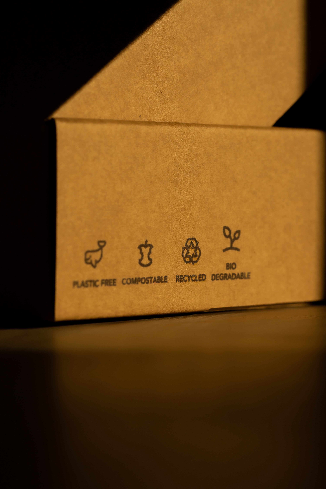
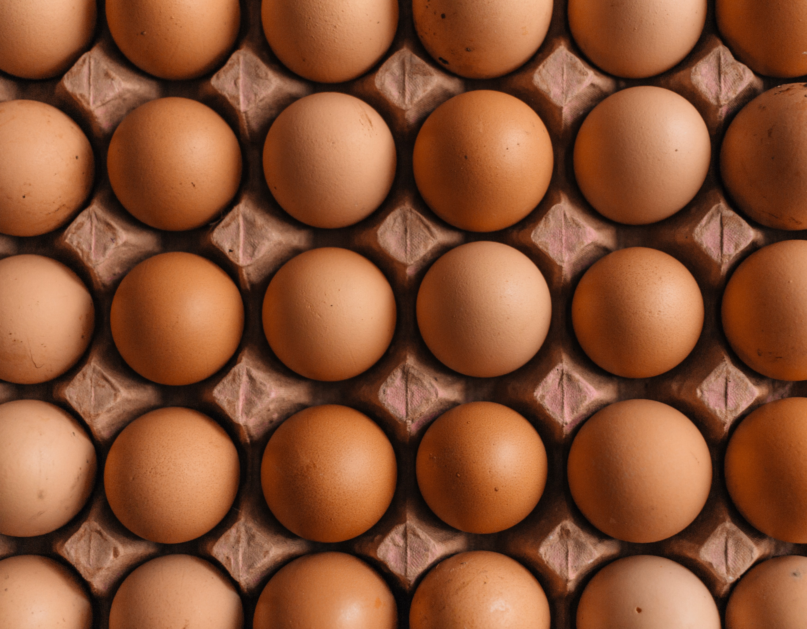
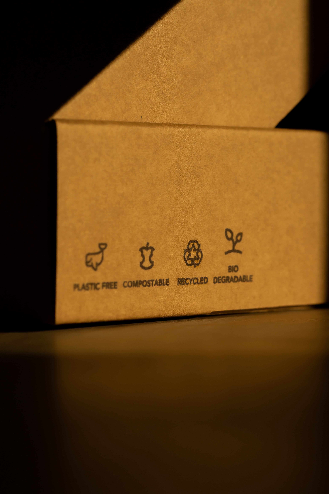
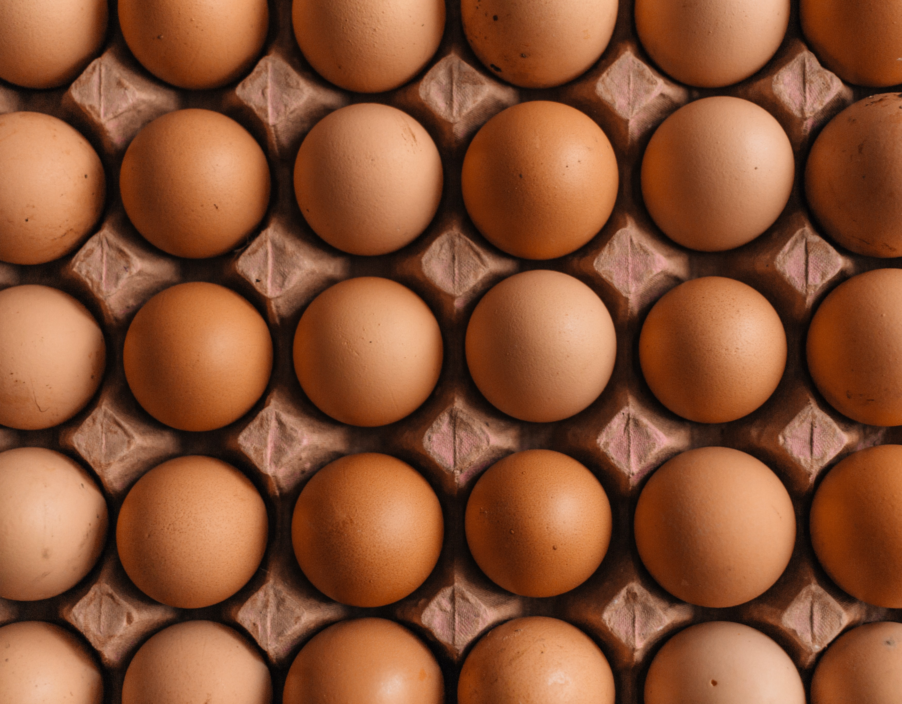

Products

Packaging Box $30.00
|

Egg Carton $20.00
|
Kerri Major (30 June,2021), Plastic is one of the most persistent pollutants, it takes 400 years and even more to be fully broken down. And even after it’s lifecycle it creates greenhouse gas emissions that are contributes to warming of our planet.
However, small particles that break-off from often find themselves into the ocean or rivers because of water courses and rain. Many fish eat these particles which ends up on our plates, in our stomachs.
To have more affordable biodegradable packaging produce directly for Barbados. Barbados has a lot of land that is left idle, and Barbados yearns for more production industries.
With the recent banned on petroleum packaging, I believe that it is time that we supply ourselves and the region.
The produce being offer is biodegradable packages which would source materials from the locals.
Products would be made from hay, recycled paper. These are both bould be cost effect and would be washed separately in a soapy water to remove any things that maybe on the surface. A mixer of both are then youed in a heat press to create the product.

Packaging Box $30.00
|

Egg Carton $20.00
|